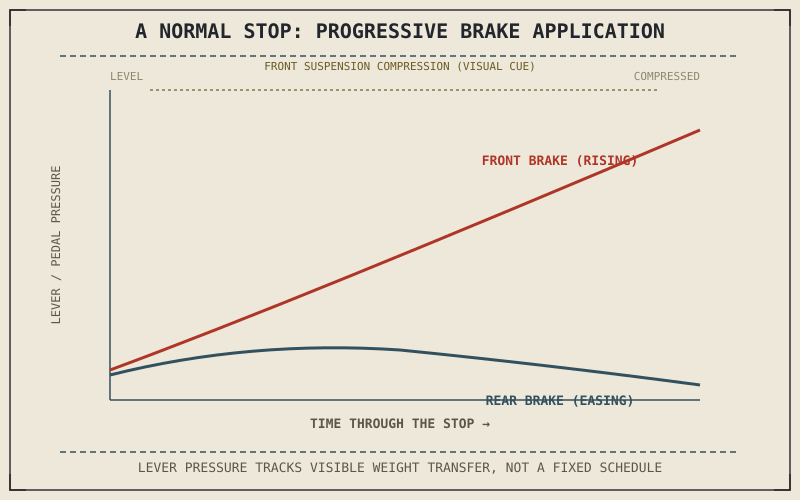

Part VII explained why the front brake supplies most of a motorcycle's stopping force and why that proportion isn't fixed. This chapter isn't a new theory — it's that same physics translated directly into what a rider's hands and foot should actually be doing during an ordinary, everyday stop, before the emergency and trail-braking techniques the next two chapters cover.
Chapter 9.2 closed by naming braking technique as this chapter's subject, applying Part VII and Part VIII's physics to actual brake use. This chapter is that application.
Progressive Application, Not a Fixed Split
Chapter 7.6 established that the ideal front-rear brake split grows more front-weighted as deceleration intensity increases, tracking the weight transfer Chapter 7.5 described. In practice, this means a normal stop starts with both brakes applied gently and roughly together, then the front brake's share increases progressively as the stop develops and weight transfer actually delivers the front tyre the extra grip Chapter 7.5 calculated — squeezing the front lever with increasing, not constant, pressure through the stop, while easing rear brake pressure back as the rear tyre's available grip correspondingly shrinks. A rider applying maximum front brake force immediately, before weight transfer has happened, is asking for grip that Chapter 7.5's own physics says isn't there yet.
Reading the Bike's Response Instead of a Fixed Formula
Because Chapter 7.6 showed the correct split isn't a fixed percentage but a continuously shifting target, no single lever-pressure number applies to every stop — the correct feel comes from sensing the front suspension compressing under load, exactly the visible weight transfer Chapter 7.5 described, and matching increasing brake pressure to that compression as it happens rather than to a predetermined schedule. This is a skill built through repetition rather than a number that can simply be memorized, precisely because the underlying physics itself is dynamic rather than fixed.
There's no fixed lever-pressure number for a good stop, because Chapter 7.6 already showed the correct brake split itself keeps changing as the stop develops. Good braking technique means tracking that shifting target by feel, not applying a memorized formula.

A timeline of a normal stop showing front brake lever pressure rising progressively while rear brake pressure eases back, tracking the front suspension's compression as weight transfer develops through the stop.
Two Fingers or Four: A Practical Note on Lever Feel
Chapter 7.3 explained that caliper piston area relative to master cylinder piston area sets how much lever force is amplified into clamping force — a relationship that also determines how much finger strength a given stop actually requires. Many riders brake effectively using two fingers on the lever rather than a full four-finger grip, since modern brake systems are usually leveraged enough that two fingers can apply the full clamping force Chapter 7.2's torque relationship describes, while keeping the remaining fingers on the grip for better control feel and quicker access to the clutch if needed.
A Common Misconception, Cleared Up Early
It's a common assumption that "good" braking technique means stopping as hard as possible every time, treating maximum deceleration as the goal of every stop. Most everyday braking is comfortably within the tyre's available grip with room to spare, and the progressive, weight-transfer-tracking technique this chapter describes matters for smoothness and predictability in ordinary riding, not because every stop is being pushed toward the friction circle's edge. Reserving genuinely maximum, threshold-level braking for the emergency situations Chapter 9.4 covers next, rather than applying it to every routine stop, is itself part of good technique.
Where This Leads
Ordinary braking technique assumes time to apply that progressive pressure smoothly. An emergency doesn't offer that time, and pushes a rider toward the friction circle's actual limit rather than staying comfortably inside it. Chapter 9.4 turns to that situation directly: emergency and threshold braking.
Key Concepts to Remember
- A normal stop starts with both brakes applied gently together, then shifts progressively toward the front as weight transfer actually delivers it more grip to work with.
- Good braking feel tracks visible front suspension compression rather than a fixed, memorized lever-pressure schedule, since the correct split itself keeps shifting.
- Most everyday braking stays well inside the tyre's available grip; maximum, threshold-level braking is reserved for genuine emergencies, not applied to every stop.
Cross-References
| ← Ch. 7.6 | Established that ideal brake balance shifts continuously with deceleration; this chapter shows a rider tracking that shift by feel during a normal stop. |
| ← Ch. 7.5 | Established weight transfer developing progressively through a stop; this chapter matches brake pressure timing directly to that development. |
| ← Ch. 7.3 | Explained piston-area leverage in the braking system; this chapter connects that leverage to how much finger strength a stop actually requires. |
| → Ch. 9.4 | Covers emergency and threshold braking, where a rider must approach the friction circle's actual limit rather than stay comfortably inside it. |